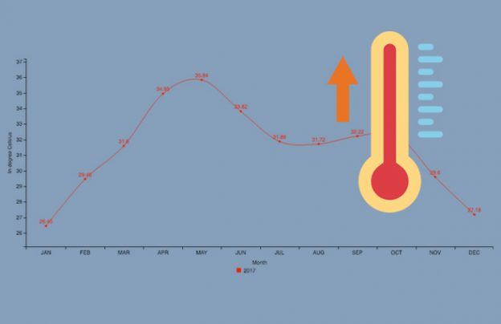
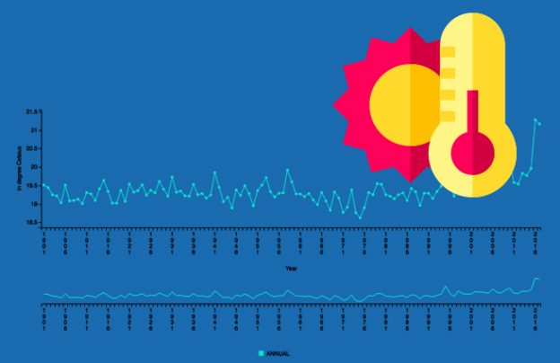
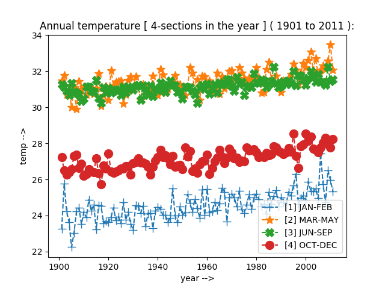
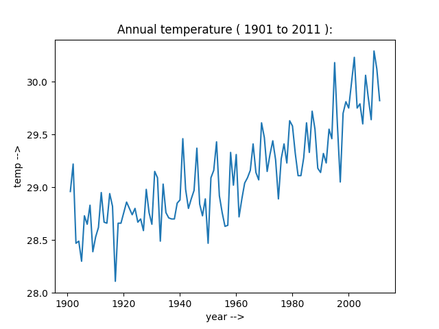

| Home > Temperature > |
|
|  |
Agriculture Data
|
 |
Data DescriptionThis time series is based on the surface air temperature (1.2 m above sea level) data from more than 350 stations spread over the country.The time series shows a warming over India during the recent years. |
[1]-->Released Under: National Data Sharing and Accessibility Policy (NDSAP) [2]-->Contributor: Ministry of Earth SciencesIndia Meteorological Department (IMD) [3]-->Group: India Maximum Temperatures [4]-->Sectors: Atmospheric Science and Technology [5]-->Published on Data Portal: 13/02/2014 [6]-->Source: data.gov.in |
|  |  |